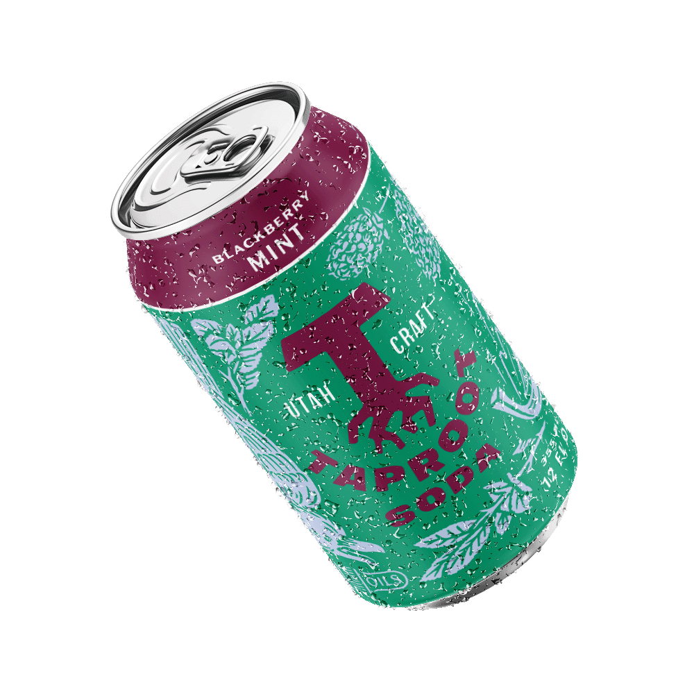
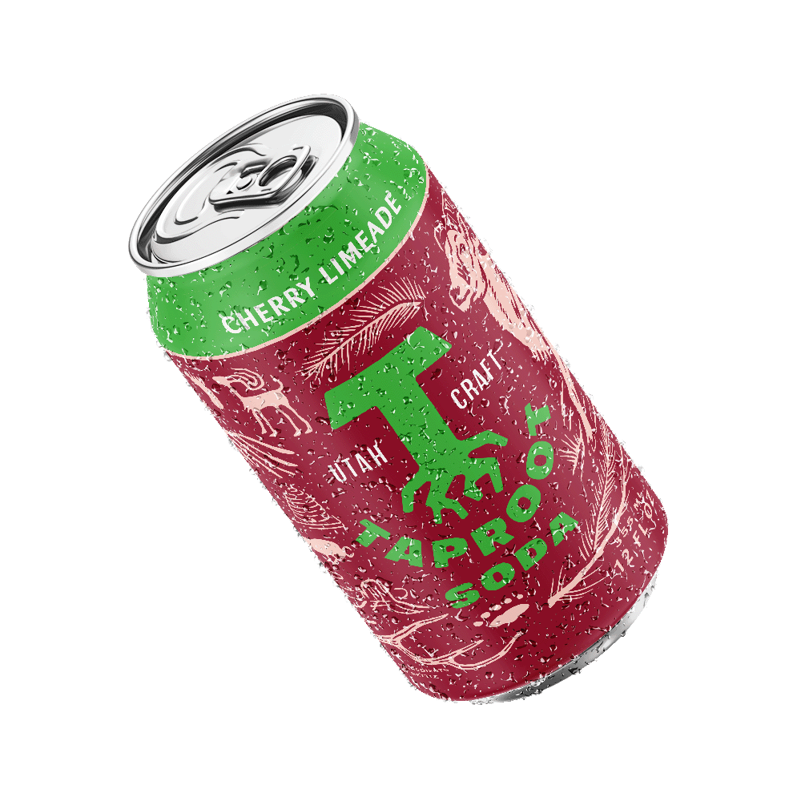
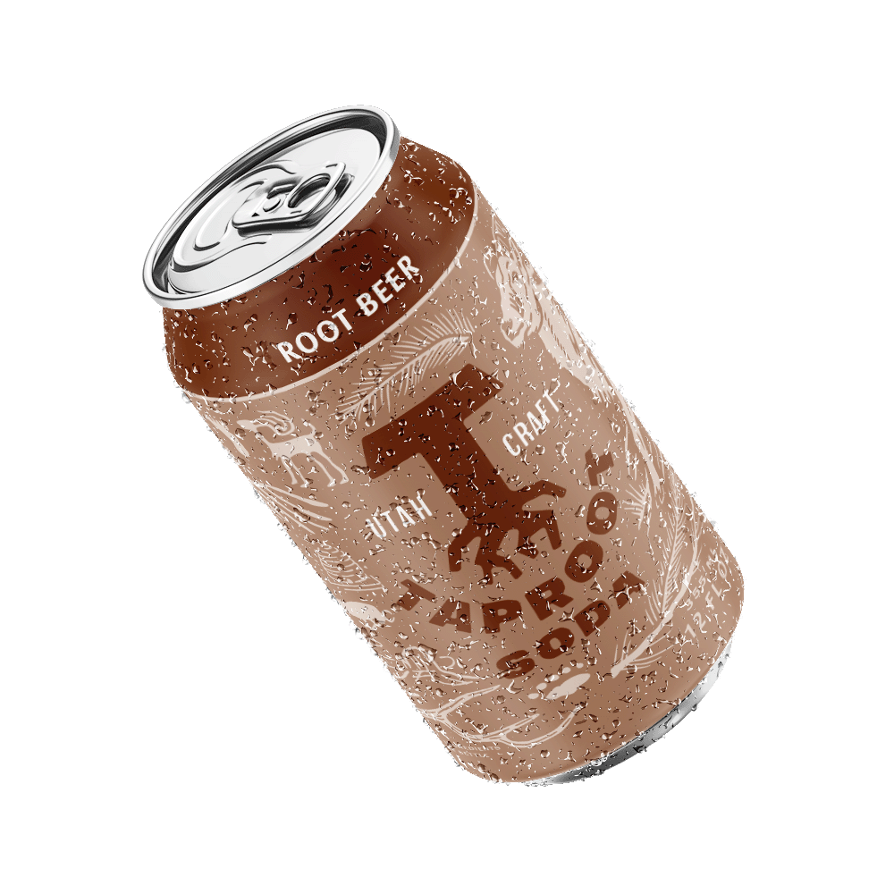
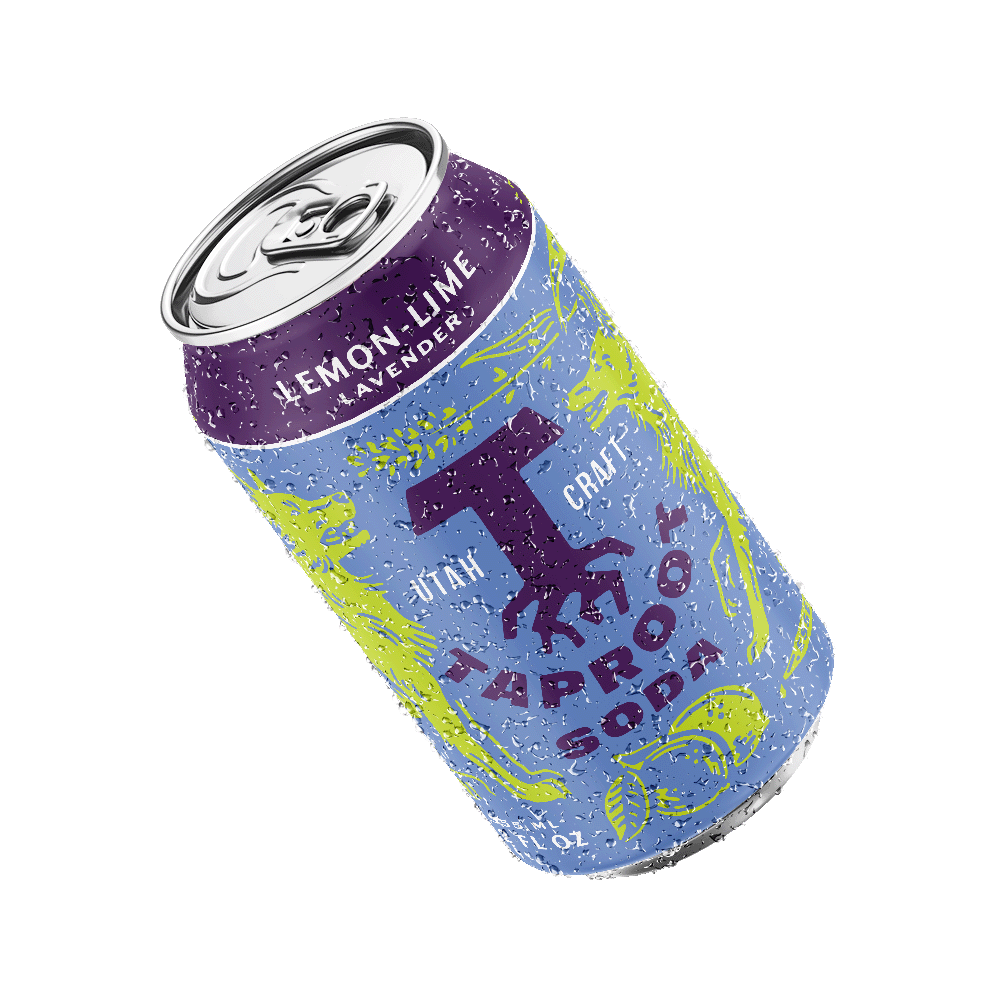
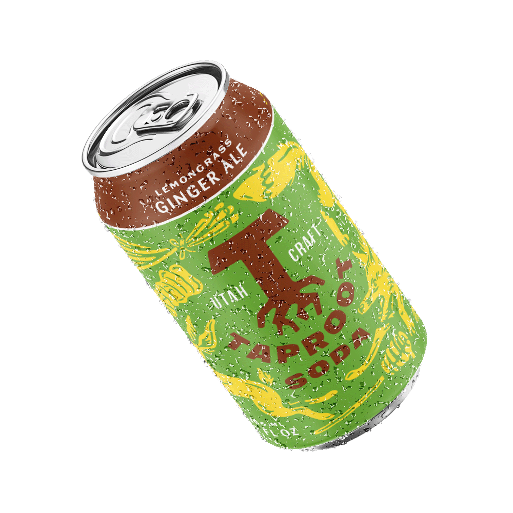
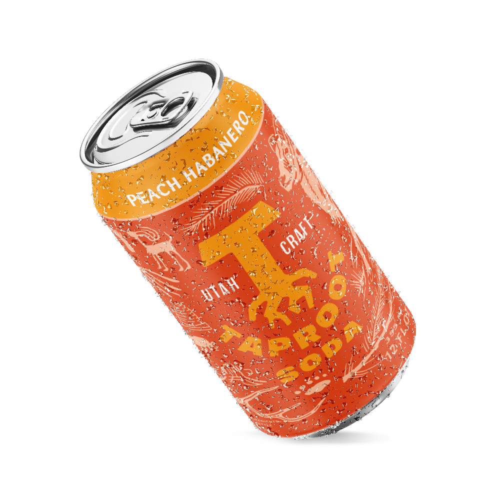

Blackberry Mint  A light and fruity soda with a hint of refreshing mint Real flavors from: Organic cane sugar, Oregon blackberries, mint essential oil
Cherry Limeade  A familiar flavor, elevated by the tartness of real citrus and cherry Real flavors from: Organic cane sugar, cherries, lime juice
Rootbeer  Our take on a classic rootbeer! Deep, spiced sweetness with complex herbal notes Real flavors from: Organic cane sugar, vanilla, star anise, burdock
Lemon Lime Lavender  Just a touch of lavender to elevate this classic flavor combo Real flavors from: Raw honey, lime and lemon juice, lavender essential oil
Lemongrass Ginger  Ginger ale with floral and herbal accents from lemongrass Real flavors from: Raw honey, Thai lemongrass, fresh pressed ginger
Peach Habanero  Fresh peaches with a hint of heat from habanero Real flavors from: Organic cane sugar, peaches, habanero